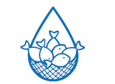
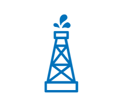
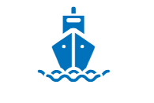

|
 | ||
|---|---|---|---|
| Agricultura | Ganadería | Pesca | Industria |
| Precursora en la siembra directa y en incorporación de biotecnología. | Buen estatus sanitario y oferta de carne de excelente calidad. | Extenso litoral marítimo, aguas continentales y acuicultura. | Cinco polos: Paraná- Plata, Centro, NEA, NOA y Patagonia. |
|  |  | ||
|---|---|---|---|
| Energía y Minería | Turismo | Servicios | Comercio Exterior |
| Importantes riquezas en reservas mineras y en recursos energéticos. | Por su oferta e infraestructura, es el país más visitado de Sudamérica. | Un sector con fuerte y sostenido crecimiento interanual. | Participación en el intercambio del concierto de las naciones. |